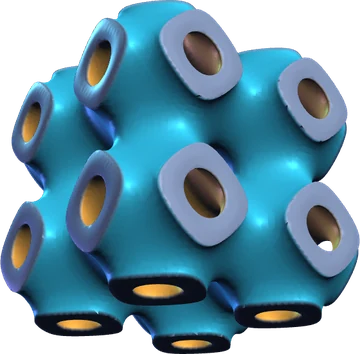
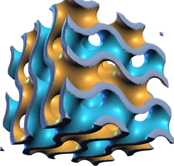
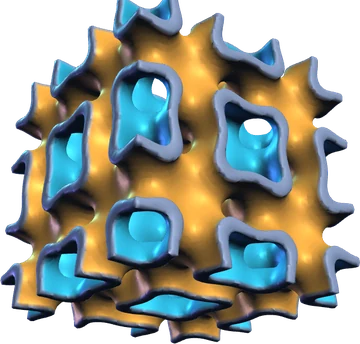
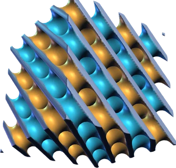
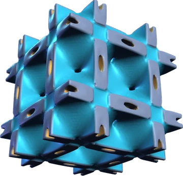

Topology-driven electromechanical actuation in 3D-printed TPMS piezoelectric ceramics
A piezoelectric ceramic normally stretches along the applied field. We printed lead-free K0.5Na0.5NbO3 into triply periodic minimal surface lattices and coated both of the lattice's internal surfaces as electrodes. The field then runs across each thin wall, the walls shrink along their own plane through the transverse d31 effect, and the whole cube contracts in every direction: auxetic actuation from geometry alone, at a fraction of the voltage a solid block would need.
Material
K0.5Na0.5NbO3 (KNN), lead-free
Printing
Lithography-based ceramic manufacturing (Lithoz CeraFab Multi 2M30), 25 µm layers, sintered 1130 °C
P–E loops, laser interferometry, CT, SEM; nonlinear ferroelectric–electrostrictive FEM
A ceramic lattice that shrinks in every direction, in 54 s. No sound.
Findings
Key quantity on the left.
0.5 mmwall the field crosses, inside a 10 mm cube
Electrodes inside the lattice
A TPMS divides space into two interpenetrating labyrinths. Metallising the two surfaces that face them, and stripping the outer faces, turns each wall into a capacitor. The field runs through the ≈ 0.5 mm wall rather than the full 10 mm height, so a large ceramic volume is activated at low voltage. In effect it is a low-density multilayer actuator folded into 3D.
24 vs 13 ppmvolumetric strain at 16 µC cm−2, gyroid vs KNN cylinder
Auxetic actuation
Cylinders of the same KNN expand along the field, the usual “wings-up” butterfly loop. The printed gyroids contract on all six faces, with an inverted “wings-down” loop, and their volumetric strain is nearly double. Both show the same ferroelectric signature, remanent polarization ≈ 10 µC cm−2 and coercive field ≈ 10 kV cm−1. The contraction is visible by eye with the sample in silicone oil.
Q12/Q11 ≈ 0.27measured transverse-to-longitudinal electrostriction ratio
Why it shrinks
Each wall expands across its thickness (n-mode, Q11 and d33) and contracts in its own plane (t-mode, Q12 and d31). Through-thickness expansion barely changes the outer size of the lattice, while in-plane contraction pulls the whole network inward. A nonlinear ferroelectric–electrostrictive model, fitted to the measured loops, reproduces the polarization and displacement curves.
957 → 1717|uz|/V0 in pm V−1, Primitive to Diamond, modelled at 1 kV
Five lattices, one rule
All five TPMS types, printed and tested, contract. At equal volume fraction (0.29) the thinnest walls move most: Schwarz Diamond (h = 0.38 mm) reaches 1717 pm V−1 and deff ≈ −107 pC N−1, Schwarz Primitive (0.64 mm) 957 pm V−1 and −45 pC N−1. Thinner walls see a higher field at the same voltage, at the cost of more current.

Primitive957 pm V−1h 0.64 mm · A 4.5 cm²deff −45 pC N−1Thickest walls, least motion.

Gyroid1476 pm V−1h 0.48 mm · A 6.0 cm²deff −83 pC N−1Most uniform walls; beats Neovius at the same mean thickness.

I-WP1652 pm V−1h 0.41 mm · A 6.9 cm²deff −93 pC N−1Thin walls, polarization up to 17 µC cm−2.

Diamond1717 pm V−1h 0.38 mm · A 7.4 cm²deff −107 pC N−1Thinnest walls, largest electrode area, top figure of merit.

Neovius1402 pm V−1h 0.47 mm · A 6.2 cm²deff −109 pC N−1Highest deff, but uneven walls cost displacement.
Values from Table 1 of the paper, modelled at 1 kV: |uz|/V0, average wall thickness h, electrode area A and effective coefficient deff. 3D renders generated from the level-set equations, 2 × 2 × 2 cells at volume fraction 0.29. Cyan and gold: the two electrode surfaces; grey: ceramic cut at the cube faces.
Gyroid > Neoviussame mean wall thickness, more uniform walls
Uniform walls win
Uneven wall thickness creates gradients in polarization and stress that waste strain. The gyroid outperforms the Neovius lattice although both have nearly the same average thickness, because its walls vary less. Each thickness also has an optimal driving voltage, beyond which polarization saturates. Constant-thickness “shellular” TPMS walls are the next step.
≈ 1.6×volumetric strain of the TPMS structures vs bulk
Geometry as a design parameter
Response scales with geometry, not just with composition: wall thickness and TPMS type tune the effective coefficients, and the figures of merit improve as mass goes down. The platform targets volumetric actuators for adaptive optics, reconfigurable microsystems and hydrostatic acoustics, in a lead-free ceramic.
Funding acknowledged in the paper: Novo Nordisk Foundation Pioneer Innovator Grant TEMPO (NNF23OC0083251), Villum Fonden (37520) and Innovation Fund Denmark (9065-00196B). Printing at the E-MAT national infrastructure. A patent application on TPMS electromechanical metamaterials is pending to DTU.
Paper
2025Acta Materialia, article 121724
Topology-driven electromechanical actuation in 3D-printed TPMS piezoelectric ceramics
K. Didilis, G. V. Selicani, V. B. Tinti, M. Mobin, D. Brouczek, L. Staal, D. Marani, A. R. Insinga, A. B. Haugen, V. Esposito. Acta Materialia (2025) 121724.